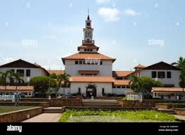
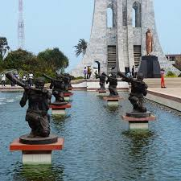
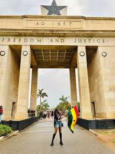
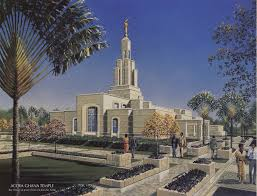

The name of my favourite city is Accra. Even though it is located in the smallest region in Ghana it is the richest city in Ghana.
Why you may ask, the answer is very simple yet complicated at the same time, it is the capital of Ghana and most of the big companies are all located there.
this makes it difficult to rent and apartment let alone buy a land there, but strangely enough alot of people live there to the extent that it is considerd chocked.
It is a truly strange land
There are two things that I love about Accra, which make it my favourite city is that is home to the Temple and also this is the one place that teaches you about life.
It teaches you to adapt and to always to inovative, because it you are not, you will not survive.



